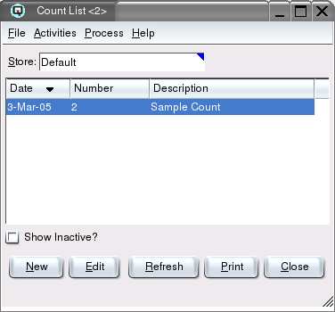

Count List

The count list contains a list of physical inventory count records.
Counts are entered using the inventory count master.
List Table
-
- Date - The date of the item count.
- Number - The count number.
- Description - The description of the item count.
- Inactive? - The active state of the count. Once a count
has been processed it changes to inactive.
Process
By clicking on the process button at the top of the Count List you can
complete the following count related processes.
-
- Search For Item - Allows you to see the count number and line
number that an item was counted on.
- Item Not Counted - Displays a report for all items not counted in
a department, sub-department, group or location.
- Discrepancy Report - Shows any discrepancies to what has been
counted in comparison to the system onhands.
- Process Counts - When you are satisfied with the count you can
process it and update the inventory on hands accordingly.
Show Inactive?
Toggle on or off. Toggle on to display both active and non-active
counts. Toggle off to display only active counts.
New
Select this function to create a count.
Edit
Select this function to edit the high-lighted count.
Refresh
Clicking on refresh will refresh the data on the screen.
Print
Select this function to print the contents of the list to the
printer.